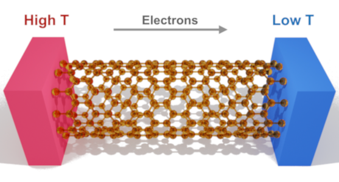
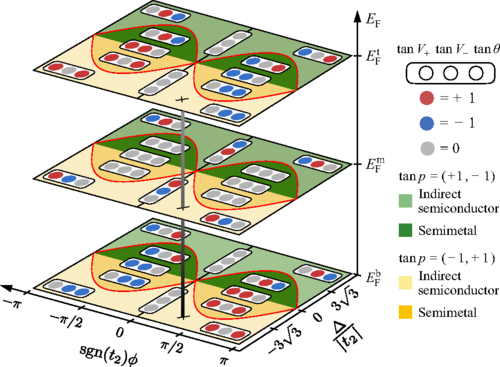
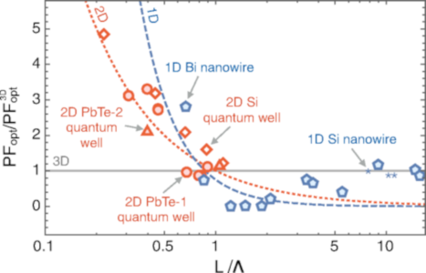

Papers in Peer-Reviewed Journal
* corresponding author and † equal contribution, ResearcherID: N-6212-2015
2021
R. Saito, M. S. Ukhtary, S. Wang and N. T. Hung, Selection rule for Raman spectra of two‐dimensional materials using circularly‐polarized vortex light, Phys. Chem. Chem. Phys. xxx, xxx (2021).
N. T. Hung* and R. Saito, The origin of quantum effects in low-dimensional thermoelectric materials, Adv. Quantum Technol. 4, 2000115 (2021) (Invited review)
☘ Note: An illustration of this review paper is selected as a back cover.V. V. Thanh, N. D. Van, D. V. Truong and N. T. Hung*, Charge-induced high-performance actuation of borophene, J. Phys. D: Appl. Phys. 54, 105504-1-8 (2021).
2020
K. Zhang, T. Wang, X. Pang, F. Han, S. L. Shang, N. T. Hung, Z. K. Liu, M. Li, R. Saito and S. Huang, Anisotropic Fano resonance in the Weyl semimetal candidate LaAlSi, Phys. Rev. B 102, 235162-1-8 (2020).
S. D. N. Luu, A. R. Supka, V. H. Nguyen, D. V. N. Vo, N. T. Hung, K. T. Wojciechowski, M. Fornari and P. Vaqueiro, Origin of low thermal conductivity in In4Se3, ACS Appl. Energy Mater. 3, 12549-12556 (2020).
V. V. Thanh, N. D. Van, D. V. Truong, R. Saito and N. T. Hung*, First-principles study of mechanical, electronic and optical properties of Janus monolayer of transition metal dichalcogenides, Appl. Surf. Sci. 526, 146730-1-8 (2020).
N. T. Hung*, A. R. T. Nugraha, T. Yang and R. Saito, Confinement effect in thermoelectric properties of two-dimensional materials, MRS Adv. 5, 469-479 (2020). (Invited review)
K. Zhang, X. Pang, T. Wang, F. Han, S. L. Shang, N. T. Hung, A. R. T. Nugraha, Z. K. Liu, M. Li, R. Saito and S. Huang, Anomalous phonon-mode dependence of polarization-resolved Raman spectroscopy in topological semimetal TaP, Phys. Rev. B 101, 014308-1-9 (2020).
☘ Note: Media coverage includes Pennsylvania State University news (with the title “New class of materials shows strange electron properties” on Feb. 13, 2020) and Phys.org.Q. D. Truong, L. C. Yin, N. T. Hung, D. N. Nguyen, Y. Gambe, K. Nayuki, Y. Sasaki, H. Kobayashi, R. Saito, P. D. Tran and I. Honma, Anionic redox in a-(Mo3S11)n polymer cathode for all-solid-state Li-ion battery, Electrochim. Acta 332, 135218-1-8 (2020).
2019
N. T. Hung*, L. C. Yin, P. D. Tran and R. Saito, Simultaneous anionic and cationic redox in Mo3S11 polymer electrode of sodium-ion battery, J. Phys. Chem. C 123, 30856−30862 (2019).
N. T. Hung*, A. R. T. Nugraha and R. Saito, Thermoelectric properties of carbon nanotubes, Energies 12, 4561 (2019). (Invited review)

V. V. Thanh, D. V. Truong and N. T. Hung*, Charge-induced electromechanical actuation of two- dimensional hexagonal and pentagonal materials, Phys. Chem. Chem. Phys. 21, 22377-22384 (2019).
S. Li, Y. Xia, M. Amachra, N. T. Hung, Z. Wang, S. P. Ong and R. J. Xie, Data-driven discovery of full-visible-spectrum phosphor, Chem. Mater. 31, 6286−6294 (2019).
V. V. Thanh, N. T. Hung, T. T. Quang and D. V. Truong, Determining ideal strength and electronic properties of Ge/Si core-shell nanowires, J. Korean Soc. Precis. Eng. 36, 1-6 (2019).
E. H. Hasdeo, L. P. A. Krisna, M. Y. Hanna, B. E. Gunara, N. T. Hung and A. R. T. Nugraha, Optimal band gap for improved thermoelectric performance of two-dimensional Dirac materials, J. Appl. Phys. 126, 035109 (2019).
M. Vila, N. T. Hung, S. Roche and R. Saito, Tunable circular dichroism and valley polarization in the modified Haldane model, Phys. Rev. B: Rap. Comm. 99 161404(R) (2019).

N. T. Hung*, A. R. T. Nugraha and R. Saito, Designing high-performance thermoelectrics in two-dimensional tetradymites, Nano Energy 58, 743-749 (2019).
B. Dong, Z. Wang, N. T. Hung, A. R. Oganov, T. Yang, R. Saito and Z. Zhang, New two-dimensional phase of tin chalcogenides: candidates for high-performance thermoelectric materials, Phys. Rev. Mater. 3, 013405-1-9 (2019).
N. T. Hung*, A. R. T. Nugraha, T. Yang, Z. Zhang and R. Saito, Thermoelectric performance of monolayer InSe improved by convergence of multivalley bands, J. Appl. Phys. 125, 082502 (2019).
☘ Note: An article within the collection: Strain Engineering in Functional Materials.
2018
V. V. Thanh, N. T. Hung* and D. V. Truong, Charge-induced electromechanical actuation of Mo- and W-dichalcogenide monolayers, RSC Adv. 8, 38667-38672 (2018).
Q. D. Truong†, N. T. Hung†, Y. Nakayasu, K. Nayuki, Y. Sasaki, D. M. Kempaiah, L. C. Yin, T. Tomai, R. Saito and I. Honma, Inversion domain boundaries in MoSe2 Layers, RSC Adv. 8, 33391–33397 (2018). († Equal contribution)
N. T. Hung*, A. R. T. Nugraha and R. Saito, Universal curve of optimum thermoelectric figure of merit for bulk and low-dimensional semiconductors, Phys. Rev. Appl. 9, 024019 (2018).
☘ Note: An article within the collection: Millie Dresselhaus: Her living scientific legacy.N. T. Hung*, A. R. T. Nugraha and R. Saito, Two-dimensional MoS2 electrochemical actuator, J. Phys. D: Appl. Phys. 51, 075306 (2018).
2017
N. T. Hung*, A. R. T. Nugraha and R. Saito, High-performance three-dimensional carbon Archimedean lattices electromechanical actuators, Carbon 125, 472-479 (2017).
N. T. Hung*, A. R. T. Nugraha and R. Saito, Size effect in thermoelectric power factor of nondegenerate and degenerate low-dimensional semiconductors, Mater. Today: Proc. 4, 12368-12373 (2017).
N. T. Hung*, A. R. T. Nugraha and R. Saito, Two-dimensional InSe as a potential thermoelectric material, Appl. Phys. Lett. 111, 092107 (2017).
N. T. Hung*, A. R. T. Nugraha and R. Saito, Charge-induced electrochemical actuation of armchair carbon nanotube bundles, Carbon 118, 278-284 (2017).
2016
N. T. Hung*, E. H. Hasdeo, A. R. T. Nugraha, M. S. Dresselhaus and R. Saito, Quantum effects in the thermoelectric power factor of low-dimensional semiconductors, Phys. Rev. Lett. 117, 036602 (2016).
☘ Note: Media coverage includes Tohoku University news (with the title “Theory of thermoelectric properties updated after 23 years” on Aug. 23, 2016) and Phys.org.

N. T. Hung*, D. V. Truong, V. V. Thanh and R. Saito, Intrinsic strength and failure behaviours of ultra-small single-walled carbon nanotubes, Comput. Mater. Sci. 114, 167-171 (2016).
2015
N. T. Hung*, A. R. T. Nugraha, E. H. Hasdeo, M. S. Dresselhaus and R. Saito, Diameter dependence of thermopower of semiconducting carbon nanotubes, Phys. Rev. B 92, 165426 (2015).
☘ Note: This paper is highlighted in News and Views section of Nature Energy (2016), "Thermoelectrics: Carbon nanotubes get high".N. T. Hung and D. V. Truong, Ab initio study of the structural transformations and pseudoelasticity in Cu nanowires, Surf. Sci. 641, 1-5 (2015).
D. V. Truong, N. T. Hung, T. Shimada and T. Kitamura, Ab initio study of shear strain effects on ferroelectricity at PbTiO3 thin films, Surf. Sci. 606, 1331-1339 (2012).